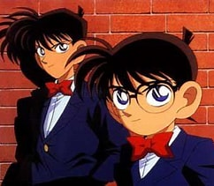
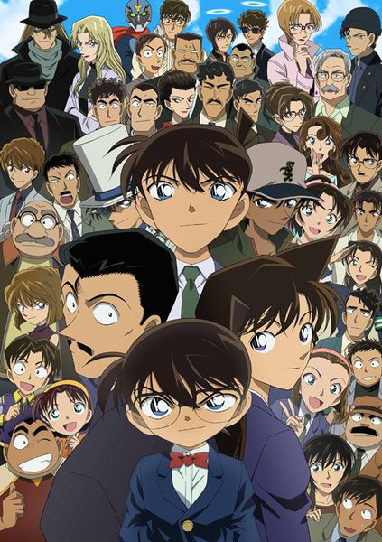

High school genius detective Jimmy Kudo is the famed detective of the east. However, when a murder case at a theme park occurs, this boy would soon become a pint-sized detective. A mysterious duo of men dressed in black fed him a poison, but the effects were the exact opposite, and Jimmy Kudo gets physically transformed into a 6 year old grade schooler. Taking the pseudonym Conan Edogawa to protect the people who surround him, he continues to solve some of the hardest cases that leave the police stumped. The only problem is, not many officials will listen to what a first grader has to say!

The Junior Detective League are a group of kids who enjoy solving mysteries, and they have solved quite a few murders. Formed by Conan, George, Amy, Mitch, and was later joined by Anita. These kids were once pretty useless, but soon, Conan's deductions inspired and taught them a lot. Their manager is their own teacher, Mrs. Kobayashi.
Despite having been shrunk, Conan continues to solve his cases through the bumbling detective Richard Moore. Equipped with a tranquilizer gun and a voice modulator wherever he goes, Conan puts Moore to sleep, and does his normal deduction routine, only through Richard's voice! Moore takes all the credit for solving the cases, but he can never quite remember how he solved it...
Known as the opposite of Jimmy Kudo, he is called the Detective of the West. Harley Hartwell, one of the very first people to figure out Conan's real identity. They solve many cases together, and Harley sometimes helps with discovering information about the syndicate that shrunk Jimmy. He is a stubborn, dark-skinned, hotheaded detective known for his Kansai dialect, but is a quite formidable opponent to Jimmy when it comes to deductions.
The Kaito Kid, a flashy and physics-defying thief that many citizens adore. But, as Conan quotes, "there is no such thing as magic in a world of detectives", and continues to reveal the tricks behind the impossible-seeming feats of the Kaito Kid, earning Conan the name "Kid-Catcher" among the media and his peers. But is there a secret hidden with his relation to the Kaito Kid? They look so similar...
Anita Hailey may seem like a normal first grader, but in reality, she is the scientist who developed the poison that shrunk Jimmy, APTX-4869. Her name is also a pseudonym, and her real name is Shiho Miyano. The original intent of this substance is currently unknown, but it wasn't supposed to be a poison. When Anita disovered the Syndicate was using it to kill, she attempted suicide with her own drug. However, the poison backfired, just like it did to Conan, and Anita was de-aged as well. She often accompanies Conan on his frequent cases, and proves herself helpful. Anita, as the creator of APTX-4869, eventually develops many temporary antidotes for Conan and herself throughout the series.
Case Closed, known as Detective Conan in Japan, is a compelling series that captivates audiences with its intricate plotlines, engaging characters, and clever mysteries. The series expertly blends elements of suspense, drama, and humor, making it accessible and enjoyable for a wide range of viewers. The protagonist, Shinichi Kudo, is a high school detective who is transformed into a child, Edogawa Conan, providing a unique twist on the detective genre. Each episode presents a new mystery that challenges viewers to solve the case alongside Conan, often incorporating clever clues and red herrings that keep audiences guessing. The series' longevity and popularity can be attributed to its ability to maintain suspense and intrigue over hundreds of episodes, while also developing deep character arcs and exploring broader themes of justice and morality. Its success is further enhanced by its rich world-building and the seamless integration of various cultural references, making Case Closed not just a series of mysteries, but a comprehensive narrative experience. Happy reading!
